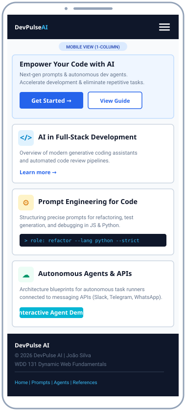

Site Name
Proposed Name: DevPulse AI
Optional Domain Availability: devpulse-ai.org (or devpulse.dev)
Rationale: The name DevPulse AI conveys the pulse and rhythm of modern software engineering powered by artificial intelligence. "Dev" signifies the developer-centric audience, while "Pulse" highlights real-time workflow momentum, continuous execution, and reactive automation pipelines. It is concise, memorable, and establishes an authoritative brand identity for technical tutorials and agentic architectures.
Site Purpose
The primary purpose of DevPulse AI is to serve as an educational and practical guide for software developers seeking to integrate artificial intelligence and autonomous workflows into daily engineering practice. Rather than generic theory, the website delivers concrete techniques, code patterns, and architectural blueprints across three core pages:
- Home Page (Overview): Explores the paradigm shift of AI across full-stack development, examining how intelligent pairing, context-aware linting, and automated code reviews elevate productivity and code quality.
- Prompt Engineering for Code: A hands-on reference detailing how to structure precise commands to generate, refactor, test, and debug code in modern web and backend languages such as JavaScript and Python.
- Automation & Intelligent Agents: Practical case studies and architecture guides showing how to deploy autonomous agents that connect with external messaging APIs (e.g., Slack, WhatsApp, and Telegram) to automate customer support and routine business tasks.
Reason for Topic Selection: Artificial intelligence has become an essential daily tool for building robust, scalable applications. This project documents and demonstrates how combining prompt engineering with autonomous agents accelerates programming logic, eliminates tedious repetitive chores, and solves practical problems in the modern software ecosystem.
Target Audience Scenarios
The site's architecture and content are driven by real questions asked by representative visitors from the developer community:
Scenario 1: Front-End Developer
"What specific prompt engineering techniques can I use to instruct an AI model to generate accessible, responsive HTML and CSS without producing obsolete markup or redundant classes?"
How the site answers: The Prompt Engineering page provides tested template prompts featuring strict constraints (semantic HTML5, W3C standards, WCAG contrast, and CSS Grid/Flexbox layouts).
Scenario 2: Back-End / Full-Stack Engineer
"How can I architect an autonomous AI agent in Python or Node.js to receive webhook events from a customer messaging API and resolve support tickets automatically?"
How the site answers: The Automation & Intelligent Agents page diagrams end-to-end webhook pipelines, tool-calling structures, and secure message handling workflows.
Scenario 3: Junior Developer & Student
"How can I safely use AI to review my code for performance bottlenecks and edge-case bugs without hallucinating invalid syntax?"
How the site answers: The Home and Prompt pages outline multi-turn verification loops, test-driven validation, and prompting patterns designed to catch edge cases.
Color Schema
The chosen color palette balances a sleek, modern tech aesthetic with high contrast and accessibility (WCAG AA/AAA compliant). This site plan document actively utilizes these selected colors:
Primary: Deep Slate
Hex: #0f172a
Usage: Header background, primary headings (h1, h2), navigation background, code block backgrounds, and footer background.
Secondary: Tech Blue
Hex: #2563eb
Usage: Section subheadings (h3), active buttons, callout borders, primary links, and key focus outlines.
Accent: Electric Cyan
Hex: #06b6d4
Usage: Interactive hover states, decorative badges, status tags, and secondary graphical accents.
Background: Slate Light
Hex: #f8fafc
Usage: Page body background, inner card backgrounds, and wireframe container surfaces.
Typography
The typography strategy employs two harmonious, widely supported Google Fonts to ensure readability, technical authority, and quick loading:
1. Heading Font: Montserrat
Weights Selected: 600 (Semi-Bold), 700 (Bold)
Usage: Main title, section headers (h1, h2, h3), logo text, and primary callout banners.
2. Body Font: Roboto
Weights Selected: 400 (Regular), 500 (Medium), 700 (Bold)
Usage: Body copy, paragraphs, list items, scenario descriptions, and UI button text.
"Artificial intelligence enables engineers to focus on high-level architecture and domain modeling by automating repetitive boilerplate generation, syntax transformations, and multi-file unit test generation."
3. Code & Monospace Font: Consolas / Monospace
Usage: Code snippets, terminal commands, prompt variables, and JSON payloads.
// Example Agent Initialization
const agent = new DevPulseAgent({ role: 'Code Reviewer', target: 'JavaScript/ES6' });Home Page Wireframes
The wireframes below depict the architectural layout of the home page across both mobile and desktop viewports, illustrating the content hierarchy and structural relationships:
